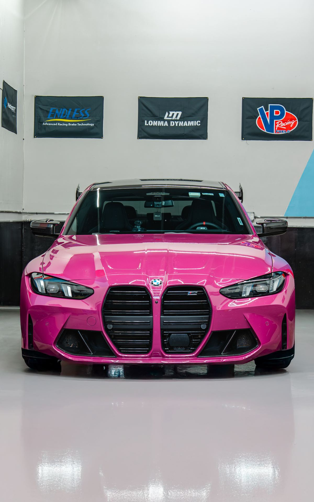

← BACK TO CASES
CASE 02
TRACK SETUP
BALANCE BETWEEN ROAD AND TRACK
A clearer performance direction built around braking, chassis feedback, and repeatable driving.

The setup is not a fixed answer. Vehicle feedback, tire condition, and real roads continue to shape the next adjustment.